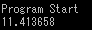
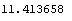
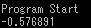
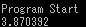
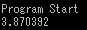
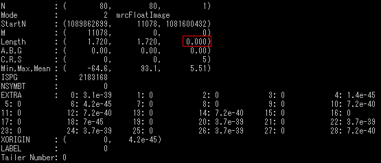

mrcImagePixelDataGet
ピクセルのデータを表示
オプション一覧
| オプション |
必須項目/選択項目 |
説明 |
デフォルト |
| -i |
必須 |
入力ファイル設定 |
NULL |
| -o |
選択 |
出力ファイル設定 |
NULL |
| -x |
選択 |
xの値設定 |
0.0 |
| -y |
選択 |
yの値設定 |
0.0 |
| -z |
選択 |
zの値設定 |
0.0 |
| -h |
選択 |
ヘルプを表示 |
|
******実行例******
------入力ファイルの画像------
 |
最小
最大
平均値
標準偏差
標準誤差
|
-64.5759
93.0617
5.50826
20.7262
0.259078
|
------オプション必須項目のみの場合------
入力ファイルのピクセルデータが以下のように表示される

------オプション -o------
-oで指定した出力ファイルにピクセルデータを書き込む
オプション-oでoutputdatafileというファイルを指定するとoutputdatafileに以下の内容が格納される

------オプション -x,-y,-z------
-xを10に設定
出力結果→
-x,-yを10に設定
出力結果→
-x,-y,-zを10に設定
出力結果→
入力画像が以下のように、ｚ軸のピクセル幅が0になっているため-zを指定しても結果が変わらないのが分かる
